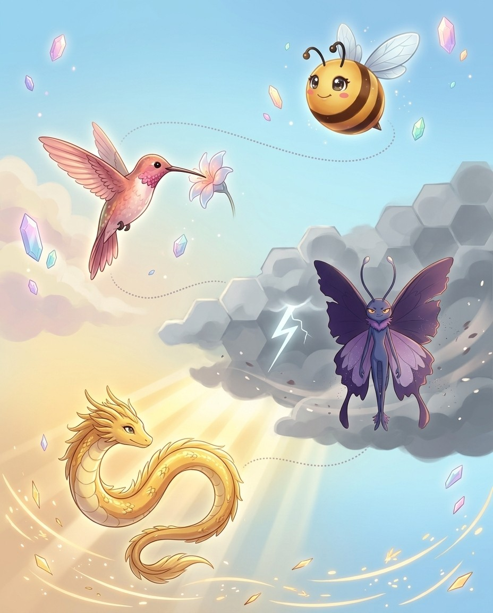
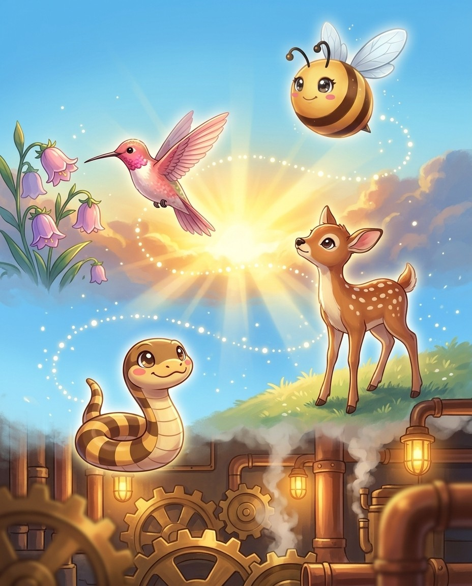

French words ending in -eau use the plural -eaux — the x is silent in both forms. The vowel combination e-a-u = /oh/ is a reliable French signal. Four letters make one sound.
The pro move
TABLEAU
Say it. t-uh-b-l-OH
Spell it. T · A · B · L · E · A · U
Say it again. t-uh-b-l-OH
Syllables. t · a · b · l · e · a · u
Sounds → Letters. [TAB=TAB] [loh=LEAU]
Exception. -eau = /oh/ sound — 4 letters make 1 sound; plural tableaux with silent X; stress: TAB-loh
Origin. French
Root. French tableau = picture, board, diminutive of table(slab, board, from
The -eau Pattern
French -eau = /oh/. Four letters, one syllable, one sound. Tableau (picture/scene), plateau (flat highland), château (castle), bureau (desk/office), trousseau (bride's possessions), gateau (French cake), flambeau (torch). All pronounced with /…
The Silent Plural -eaux
Singular -eau → plural -eaux — the x is completely silent. Both forms pronounced identically: tableau = tableaux = /TAB-loh/. This is a classic spelling bee trap: asked to spell the plural, many write -eaus. It is -eaux. Always. No exceptions.
Portmanteau — a Special Word
Portmanteau (porter = carry + manteau = cloak) = a large hinged suitcase. Lewis Carroll also coined portmanteau word for two words merged into one: smog = smoke + fog; brunch = breakfast + lunch; motel = motor + hotel. The suitcase that holds …
More -eau Words
Nouveau (new, as in nouveau riche = newly wealthy). Beau (admirer/boyfriend). Rondeau (a type of poem). Morceau (a short musical piece). Rideau (a curtain). Bordeau (Bordeaux wine region). Some words carry the circumflex accent (â) in French; …
Vex alert
TABLEAU: a TABLE of living figures arranged like ART—the 'eau' is silent like a still painting
Check yourself
Cover the page and spell tableau · plateau · château out loud. Miss one? Read the idea again — it's faster than guessing twice.
French words ending in -oir or -oire carry their French spelling into English intact. The -oir sounds like /wahr/ — a distinctively French pattern impossible to guess without knowing it.
The pro move
BOUDOIR
Say it. b-OO-d-oy-r
Spell it. B · O · U · D · O · I · R
Say it again. b-OO-d-oy-r
Syllables. b · o · u · d · o · i · r
Sounds → Letters. [BOO=BOU] [dwahr=DOIR]
Exception. -oir = /wahr/ sound; from French bouder = to sulk; stress on second syllable boo-DWAHR
Origin. French
Root. French bouder = to sulk, pout
The -oir Pattern
French -oir = /wahr/ sound. Boudoir (bouder = to sulk) = a private sitting room. Abattoir (abattre = to strike down) = a slaughterhouse. Peignoir (peigner = to comb) = a lightweight dressing gown. Armoire (armarium = cupboard) = a tall wardrob…
More -oir/-oire Words
Reservoir (réserver) = a lake storing water — R-E-S-E-R-V-O-I-R. Memoir (mémoire = memory) = a personal narrative. Repertoire (répertoire = inventory) = a known set of works — R-E-P-E-R-T-O-I-R-E (keeps the final e in American English). Conser…
Memory Trick
The -oir ending sounds like the English word "war" with a /w/ added: /wahr/. So boudoir = BOO + d + war = BOO-dwahr. Abattoir = uh-BAT + war = uh-BAT-wahr. Once you hear the /wahr/ ending, the -oir spelling becomes automatic.
Reservoir Spelling Detail
R-E-S-E-R-V-O-I-R — the -oir at the end, not -oire. Note the vowel sequence: E-R-V-O-I-R. Many misspell this as resevoir (dropping the r) or reservoire (adding an e). Say it syllable by syllable: res · er · voir — three clean syllables.
Vex alert
A MEMOIR is a MEMory told with French flair — spell the French ending 'o-i-r', not 'i-o-r'.
Check yourself
Cover the page and spell boudoir · abattoir · peignoir out loud. Miss one? Read the idea again — it's faster than guessing twice.
BizzyThe French ending e t t e means a little version of something. It always has a double t, and it always…
UH-OH!
Nectar · Vex is circlingBig trap. The ending always has a double t. Pirouette, a spinning ballet turn, is spelled with t t before that silent…
PIROUETTE
GOT IT!
UniHere is the key listening trick. If you hear a vowel before the final t, like pi roo et, it is e…
ViperA marionette is a small puppet, and the name means little Mary. The ending e t t e makes the Mary tiny.…
MARIONETTE
🔊 narrated in the appturn the page — the whole trick, explained →
Bizzing Bee · The World Tour16
Chapter 3 · -ette (French diminutive)The idea · ★★☆
The big idea
French -ette = a small version of something (diminutive). Always double-t, always ends in silent -e. Once you see the pattern, every -ette word spells itself.
The pro move
PIROUETTE
Say it. p-ih-r-oo-EH
Spell it. P · I · R · O · U · E · T · T · E
Say it again. p-ih-r-oo-EH
Syllables. p · i · r · o · u · e · t · t · e
Sounds → Letters. [pir=PIR] [oo=OU] [ET=ETTE]
Exception. -ette = small/diminutive; from French pirer = to spin; final -ette not -et; stress on last syllable: pir-oo-ET
Origin. French
Root. French pirouette = spinning top
The -ette Diminutive
French -ette makes things smaller or more delicate. Pirouette = a spinning turn. Marionette = a small puppet (originally "little Mary"). Palette (pale = shovel) = a small flat surface for colors. Layette = a set of small baby clothes. Coquette…
-ette for Compositions
Vignette (vigne = vine) = a brief literary sketch. Roulette (rouler = roll) = little rolling wheel. Serviette = a small serving cloth = napkin. Brunette = having brown hair. Rosette = a rose-shaped decoration. Cassette = a small case. Etiquett…
Always Double-T
The -ette ending always has double-t: P-I-R-O-U-E-T-T-E, never pirouete. The -tt- comes from the French diminutive form. ⚠️ Confetti (Italian, not French) = C-O-N-F-E-T-T-I — double-t here is Italian diminutive, not the French -ette pattern. D…
-ette vs -et (Single-t)
Some French words end in -et (single-t, silent final t): buffet, bouquet, ballet, ricochet, crochet. The -ette words have a pronounced vowel before the final t: pi-roo-ET (you hear the vowel). The -et words have a stressed vowel that ends the …
Vex alert
ROULETTE is a little wheel — the -ETTE ending spins like the wheel, one T before the E, never two.
Sound trap
palette sounds like palate, palate — at the mic, always ask for the meaning.
Check yourself
Cover the page and spell pirouette · marionette · palette out loud. Miss one? Read the idea again — it's faster than guessing twice.
Three French/Italian-derived endings giving English some of its most distinctive-looking words. Silent -e at the end; qu sounds like /k/. These patterns are completely regular once learned.
The pro move
PICTURESQUE
Say it. p-IH-k-ch-ur-uh-s-k
Spell it. P · I · C · T · U · R · E · S · Q · U · E
Say it again. p-IH-k-ch-ur-uh-s-k
Syllables. p · i · c · t · u · r · e · s · q · u · e
Sounds → Letters. [pik=PIC] [chur=TUR] [ESK=ESQUE]
Exception. -esque = in the style of; silent final -e; stress on last syllable pik-chur-ESK
Origin. French
Root. French pittoresque = like a picture
-esque = In the Style Of
Italian -esco → French -esque → English. Picturesque = like a picture = visually charming. Grotesque (grotta = cave/grotto) = bizarre and distorted. Arabesque = in the Arabic style. Burlesque = comic theatrical style. Statuesque = like a statu…
-ique = French Origin Signal
-ique words come from French. Boutique = a small specialty shop. Mystique = an air of mystery. Technique = a method. Physique = body structure. Antique = an old object. Unique = the only one of its kind. Oblique = slanting. All pronounced with…
-que at the End
Rare but important: opaque (opacus = shaded) = does not allow light through. Plaque = a flat commemorative sign. Torque (torquere = to twist) = rotational force. Clique = a small exclusive group. The -que without a preceding -i- appears in onl…
The qu Rule
In all three endings, q is ALWAYS followed by u. English never has q without u — except in borrowed words like qi, qigong, qanat. For all -esque/-ique/-que words: always write qu, never just q. This is one of the most reliable spelling rules i…
Vex alert
OBLIQUe — think of a slanted line that is not quite EQUAL to straight.
Sound trap
opaque sounds like opake · plaque sounds like plack — at the mic, always ask for the meaning.
Check yourself
Cover the page and spell picturesque · grotesque · arabesque out loud. Miss one? Read the idea again — it's faster than guessing twice.
4. position in which the dancer has one leg raised behind and arms outstretche…
5. is visually charming or quaint
6. a theatrical entertainment of broad and earthy humor; consists of comic ski…
Down
1. an elderly man
2. is odd or unnatural in appearance or shape
3. of size and dignity suggestive of a statue
Bee Break · Naga's true fact
The Naga is a mighty serpent of Hindu and Buddhist legend, said to guard treasure, temples and rivers.
Bizzing Bee · The World Tour27
Chapter 5 · French Silent LettersStory · ★★★
5
French Loanword Patterns
French Silent Letters
📍 the Proving Ground
BizzyMany French words in English carry silent final letters. They were once spoken in Old French, then fell silent, but the spelling…
UH-OH!
Nectar · Vex is circlingNow the trickiest one. Corps is spelled C, O, R, P, S, but both the p and the s are silent, so…
CORPS
GOT IT!
NoodleSo here's your bee strategy. If a word comes from French, expect the final consonants to be silent, and put the stress…
SlowmoLots of these end in a silent t. Ballet sounds like ba-lay, bouquet sounds like boo-kay, and crochet sounds like kroh-shay. The…
🔊 narrated in the appturn the page — the whole trick, explained →
Bizzing Bee · The World Tour28
Chapter 5 · French Silent LettersThe idea · ★★★
The big idea
French words in English frequently carry silent final consonants — -t, -s, -x, -p, -d. These were once pronounced in Old French but fell silent while spelling was preserved. The result: some of English's trickiest words.
The pro move
RENDEZVOUS
Say it. RAH-ndih-voo
Spell it. R · E · N · D · E · Z · V · O · U · S
Say it again. RAH-ndih-voo
Syllables. raa · ndih · vuw
Sounds → Letters. [RON=REN] [day=DEZ] [voo=VOUS]
Exception. -ez = /ay/; -vous = /voo/; final -s completely silent; from rendez-vous = present yourselves
Origin. French
Root. French rendez-vous = present yourselves
Silent Final -t
Ballet (ba-LAY), bouquet (boo-KAY), crochet (kroh-SHAY), ricochet (RIK-uh-shay), parquet (par-KAY), valet (VAL-ay), buffet (buh-FAY), debut (day-BYOO). The -t is spelled, never pronounced. "Spell what you don't hear" is the French rule.
Silent Final -s
Rendezvous (RON-day-voo), corps (kor — BOTH p AND s silent!), chassis (SHAS-ee), faux pas (FOH-PAH — two final consonants silent), debris (duh-BREE), fracas (FRAY-kus). These are borrowed exactly as written in French, where final -s was alread…
The Double Silent — corps
Corps = C-O-R-P-S — the p is silent AND the s is silent. Pronounced simply /KOR/. Plural corps is /KORZ/ — the s becomes voiced in the plural. Hors d'oeuvre = /or-DURV/ — the h, the s, and the final e are all silent. French truly is a language…
Silent -x
In the -eau/-eaux pattern, the plural -x is always silent. Also: faux (FOH = false, as in faux fur). Beaux (BOH = plural of beau). In Old French, x was a shorthand abbreviation for s in plurals — the abbreviation became permanent in spelling b…
Vex alert
BALLET ends in -ET (silent T) like a French baguETte — the T is there but never heard.
Sound trap
corps sounds like core — at the mic, always ask for the meaning.
Check yourself
Cover the page and spell ballet · bouquet · crochet out loud. Miss one? Read the idea again — it's faster than guessing twice.
Bizzing Bee · The World Tour29
Chapter 5 · French Silent LettersPractice · ★★★
Say it. Spell it out loud. Write it.
🔊 every word has real audio in the app
ballet
/ ba-LAY / · /bæˈleɪ/
a theatrical representation of a story that is performed to music by trained dancers
hook: BALLET ends in -ET (silent T) like a French baguETte — the T is there but never heard.
She had practiced ▁▁▁ for ten years before landing the role of the Swan Queen.
bouquet
/ b-oo-k-AY / · /bukˈeɪ/
an arrangement of flowers that is usually given as a present
hook: BOUQUET ends in -QUET but sounds like -KAY—picture a bouquet at a boutiQUE
The groom's hands trembled as he presented the bride with a ▁▁▁ of red roses and white lilies tied with a…
crochet
/ k-r-oh-sh-AY / · /kroʊʃˈeɪ/
is needlework with a needle having a hook at one end
hook: CROCHET ends silently in -ET like a French beret — hook a loop and say 'shay'!
Every evening, the grandmother would settle into her favorite armchair and ▁▁▁ colorful blankets for the …
ricochet
/ r-IH-k-uh-sh-ay / · /rˈɪkəʃeɪ/
is the motion of an object after deflecting from another object
hook: RICOCHET ends in -CHET like a bouncing CATCH — it always comes back
The rubber ball bounced
parquet
/ p-ah-r-k-AY / · /pɑrkˈeɪ/
is a floor composed of strips or blocks of wood forming a pattern
hook: PARQUET ends in -ET like a French word—it IS French, with a silent T
The ballroom in the historic mansion featured a gleaming ▁▁▁ floor of alternating oak and cherry wood lai…
valet
/ va-LAY / · /væˈleɪ/
a manservant who acts as a personal attendant to his employer
hook: A valet parks your car with élan — the silent T at the end is très French, like ballet.
Jeeves was Bertie Wooster's man
the Proving Ground
Bizzing Bee · The World Tour30
Chapter 5 · French Silent LettersRapid round · ★★★
More ammo — one line each.
buffet/BUH-fuht/ a piece of furniture that stands at the side of a dining room; …
debut/day-BYOO/ the act of beginning something new
rendezvous/RAH-ndih-voo/ a meeting planned at a certain time and place
corps/KAWR/ an army unit usually consisting of two or more divisions and th…
chassis/CHA-see/ alternative names for the body of a human being
faux/FAWKS/ not genuine or real; being an imitation of the genuine article
faux pas
debris/d-uh-b-r-EE/ is the remains of things broken down or destroyed
silhouette/s-ih-l-uh-w-EH-t/ is a two-dimensional representation of the outline of an object
esprit/eh-SPREE/ liveliness of mind or spirit
nonchalant/n-ah-n-sh-uh-l-AH-n-t/ is coolly unconcerned unexcited
coiffure/kwah-FYOOR/ the arrangement of the hair (especially a woman's hair)
Lock them in
Pick 4 words from above. Say each one as you write it — three times, no shortcuts. The third copy is the one your hand remembers.
the Proving Ground
Bizzing Bee · The World Tour31
Chapter 5 · French Silent LettersCheckpoint · ★★★
Viper · Speller of the Serpent Pack runs the checkpoint
Do you own the idea?
Same questions the app asks at this stop on the Word Map. Circle, then check the back. Viper's power is Unflappable — borrow it.
1. Which of these is the big idea of “French Silent Letters”?
ALatin dis- = apart, not, or deprived of.
BFrench words in English frequently carry silent final consonants — -t, -s, -x, -p, -d.
CIn English words of Greek origin, y functions as a vowel, sounding like /i/ or /ee/.
BizzyMeet the French ending eur, spelled E, U, R. It means one who does something. These words never use plain e-r, always…
UH-OH!
Nectar · Vex is circlingHere's a famous trap. A restaurateur runs a restaurant, but there is no n before the eur. It's R, E, S, T,…
RESTAURATEUR
GOT IT!
RattlesOne more. Amateur comes from amat, meaning love, so it's someone who does a thing for love, not money. It's A, M,…
AMATEUR
NagaTake chauffeur, one who drives. It comes from chauffe, meaning heat, because early cars needed coal-heating. Raconteur is one who tells stories,…
CHAUFFEUR
🔊 narrated in the appturn the page — the whole trick, explained →
Bizzing Bee · The World Tour34
Chapter 6 · French Agent Words: -eur / -eurThe idea · ★★☆
The big idea
French -eur = one who does (the French masculine agent suffix). These words never use -er — always -eur. And restaurateur never uses -n- before the -eur, despite what many people write.
The pro move
ENTREPRENEUR
Say it. ah-n-t-r-uh-p-r-uh-n-UR
Spell it. E · N · T · R · E · P · R · E · N · E · U · R
Say it again. ah-n-t-r-uh-p-r-uh-n-UR
Syllables. e · n · t · r · e · p · r · e · n · e · u · r
Sounds → Letters. [on=EN] [truh=TRE] [pruh=PRE] [NUR=NEUR]
Exception. French -eur not -er; no N before -eur (restauranteur = WRONG); three silent e vowels; stress: on-truh-pruh-NUR
Origin. French
Root. French entreprendre = to undertake, from entre- = between + prendre =
The -eur Agent
In French, -eur = one who does (masculine form). Chauffeur = one who drives (chauffe = heat — early cars needed coal-heating!). Raconteur = one who tells stories. Connoisseur = one who knows. Saboteur = one who sabotages. Provocateur = one who…
The Restaurateur Trap
Restaurateur (one who runs a restaurant) comes from restaurer (to restore). There is NO n before the -eur. Restauranteur is wrong — it inserts the n from the word "restaurant" which does not belong in the agent form. R-E-S-T-A-U-R-A-T-E-U-R. O…
Entrepreneur Breakdown
entre (between/undertake) + prendre (to take) + -eur = one who undertakes between supplier and customer. The word has several low-stress vowels: E-N-T-R-E-P-R-E-N-E-U-R. Spell by syllables: en · tre · pre · neur. Four syllables, twelve letters…
Grandeur — the Abstract -eur
Grandeur = greatness, magnificence. Unlike the agent -eur words, grandeur comes from grand (great) + -eur (abstract quality suffix). Pronounced GRAN-jur. Note: -eur in this word = abstract quality, not a person. The same suffix serves two func…
Vex alert
An amateur does it for LOVE — the word ends in -EUR (French for 'one who'), not -URE; think 'amat-EUR' loves it.
Check yourself
Cover the page and spell entrepreneur · restaurateur · chauffeur out loud. Miss one? Read the idea again — it's faster than guessing twice.
BizzyItalian loves doubled consonants, and English keeps them. A double consonant signals a short vowel just before it. Spotting the double often…
UH-OH!
Nectar · Vex is circlingBut careful, not every Italian word doubles. Soprano comes from sopra, meaning above, and it has no double letter. Tempo doesn't double…
GOT IT!
ViperA fun one to finish. Paparazzi is spelled P, A, P, A, R, A, Z, Z, I, with a double z, and…
FawnLook at mozzarella, spelled M, O, Z, Z, A, R, E, L, L, A. It has a double z and a double…
MOZZARELLA
🔊 narrated in the appturn the page — the whole trick, explained →
Bizzing Bee · The World Tour40
Chapter 7 · Italian Double Consonants: -zz / -cc / -ll / …The idea · ★★☆
The big idea
Italian loves doubled consonants — they mark a short preceding vowel and are always preserved in English borrowings. Recognizing the double consonant = recognizing the Italian origin.
The pro move
MOZZARELLA
Say it. mah-tsuh-REH-luh
Spell it. M · O · Z · Z · A · R · E · L · L · A
Say it again. mah-tsuh-REH-luh
Syllables. m · o · z · z · a · r · e · l · l · a
Sounds → Letters. [mot=MOZ] [suh=ZA] [REL=REL] [uh=LA]
Exception. double-Z from Italian; -ell- before -a; stress on penultimate (second-to-last) syllable: mot-suh-REL-uh
Origin. English
Root. Italian mozzare = to cut off, referring to how the cheese is formed
The Double Consonant Rule
Italian uses doubled consonants to signal a short vowel before them — and English keeps these doublings intact. Mozzarella = M-O-Z-Z-A-R-E-L-L-A (double-z AND double-l). Intermezzo = I-N-T-E-R-M-E-Z-Z-O (double-z). Palazzo (palace) = P-A-L-A-Z…
-zz Words
Mozzarella, intermezzo, palazzo, pizzicato (pizzicare = pinch), piazza (a square), paparazzi (paparazzo = a buzzing insect = a freelance photographer), mezzo (half). These zz words are among Italian's most recognizable exports to English.
-cc Words
Cappuccino = C-A-P-P-U-C-C-I-N-O (double-p AND double-c). Broccoli = B-R-O-C-C-O-L-I (double-c). Bocce (lawn bowling) = B-O-C-C-E. Staccato (staccare = detach) = S-T-A-C-C-A-T-O (double-c). A cappella (a cappella = in the chapel style) = unacc…
-ll/-pp Words
Ballerina = B-A-L-L-E-R-I-N-A (double-l). Mozzarella has double-l too. Cappuccino has double-p. Soprano (NOT doubled — from sopra = above). Tempo (NOT doubled). The doubling signals a short stressed vowel — not all Italian words double.
Vex alert
Staccato has double-c like two short detached notes — stac-CA-to, crisp and clipped.
Sound trap
mezzo sounds like meso- — at the mic, always ask for the meaning.
Check yourself
Cover the page and spell mozzarella · intermezzo · palazzo out loud. Miss one? Read the idea again — it's faster than guessing twice.
6. A large, impressive Italian palace or mansion, especially one from the Rena…
7. a public square with room for pedestrians
8. plant with dense clusters of tight green flower buds
Down
2. is a short musical entertainment between the acts of a drama or opera
3. a freelance photographer who pursues celebrities trying to take candid phot…
4. equal parts of espresso and hot milk topped with cinnamon and nutmeg and us…
🎈
Bee Break · idiom to drop at dinner
little strokes fell great oaks
small persistent efforts topple big obstacles
Bizzing Bee · The World Tour45
Chapter 8 · Italian Music & Art VocabularyStory · ★★☆
8
Italian Loanword Patterns
Italian Music & Art Vocabulary
📍 the Great Library
BizzyItalian is the language of classical music. Almost every volume marking and tempo marking has an Italian name. Piano means soft, and…
UH-OH!
Nectar · Vex is circlingSo watch that double s in the issimo words. Pianissimo is spelled P, I, A, N, I, S, S, I, M, O.…
PIANISSIMO
GOT IT!
LivyatanHere's a powerful ending: issimo, meaning most or very. Pianissimo means very soft, fortissimo means very loud, and prestissimo means as fast…
UniThe technique words tell little stories. Staccato comes from staccare, to detach, so the notes are short and clipped. Legato comes from…
STACCATO
🔊 narrated in the appturn the page — the whole trick, explained →
Bizzing Bee · The World Tour46
Chapter 8 · Italian Music & Art VocabularyThe idea · ★★☆
The big idea
Italian is the language of classical music. Every dynamic marking, tempo marking, and musical technique has an Italian name. Spelling bees love these words for their unusual consonant patterns.
The pro move
SFORZANDO
Say it. sfort-SAHN-doh
Spell it. S · F · O · R · Z · A · N · D · O
Say it again. sfort-SAHN-doh
Syllables. sfor · zan · do
Sounds → Letters. [sfor=SFOR] [TSAN=ZAN] [doh=DO]
Exception. sf- cluster (unusual in English); -z- = /ts/ sound in Italian; no double letters; stress: sfor-TSAN-doh
Origin. Italian
Root. Italian sforzare = to force, from Latin ex- + fortis = strong
Volume Dynamics — Softest to Loudest
Pianissimo (pp) → piano (p, soft) → mezzo-piano (mp) → mezzo-forte (mf) → forte (f, loud) → fortissimo (ff). Piano = soft (NOT the instrument in this context!); forte = loud/strong; mezzo = half. Sforzando = suddenly very loud. Crescendo = gra…
Italian -issimo = most/very: pianissimo (very soft), fortissimo (very loud), prestissimo (very fast), bellissimo (very beautiful). This is a living Italian superlative still fully functional in music vocabulary. Note the double-s: P-I-A-N-I-S-…
Vex alert
Staccato has double-c like two short detached notes — stac-CA-to, crisp and clipped.
Check yourself
Cover the page and spell sforzando · pianissimo · fortissimo out loud. Miss one? Read the idea again — it's faster than guessing twice.
Bizzing Bee · The World Tour47
Chapter 8 · Italian Music & Art VocabularyPractice · ★★☆
Say it. Spell it out loud. Write it.
🔊 every word has real audio in the app
sforzando
/ sfort-SAHN-doh / · /sfɔrtˈsɑndoʊ/
an accented chord
hook: SFORZANDO: FORCE it—sforZANDO contains FORCE, which means play it HARD
The pianist struck a ▁▁▁ on the final beat that made the audience jump in their seats.
pianissimo
fortissimo
/ for-TIS-ih-moh / · /fɔrˈtɪsɪmoʊ/
(music) very loud
hook: FORTissimo — FORT-like STRENGTH of sound, double the 's' like double the volume
The orchestra reached the ▁▁▁ climax of the symphony, and the thunderous sound filled every corner of …
allegretto
vivace
/ vih-VAH-chay / · /vɪˈvɑtʃeɪ/
(of tempo) very fast and lively
hook: Vivace ends in 'ace' — play it fast and lively to ace your performance!
play this section ▁▁▁!
prestissimo
/ preh-STIS-see-moh / · /prɛˈstɪssimoʊ/
(of tempo) as fast as possible
hook: PRESTO (fast) + ISSIMO (most) = PRESTISSIMO — the most-est presto you can possibly play.
this passage should be played ▁▁▁
the Great Library
Bizzing Bee · The World Tour48
Chapter 8 · Italian Music & Art VocabularyRapid round · ★★☆
More ammo — one line each.
staccato/stuh-KAH-toh/ (music) marked by or composed of disconnected parts or sounds; …
legato/luh-GAH-toh/ (music) without breaks between notes; smooth and connected
pizzicato/pit-sih-KAH-toh/ a note or passage that is played pizzicato
tremolo
vibrato/vee-BRAH-toh/ (music) a pulsating effect in an instrumental or vocal tone pro…
adagio/uh-DAH-zhee-oh/ (music) a composition played in adagio tempo (slowly and gracef…
moderato/mod-er-AH-toh/ (of tempo) moderate
intermezzo/in-tur-MET-soh/ is a short musical entertainment between the acts of a drama or…
crescendo/krih-SHEH-ndoh/ (music) a gradual increase in loudness
diminuendo
chiaroscuro
sfumato
fresco/FREH-skoh/ a mural done with watercolors on wet plaster
Lock them in
Pick 4 words from above. Say each one as you write it — three times, no shortcuts. The third copy is the one your hand remembers.
the Great Library
Bizzing Bee · The World Tour49
Chapter 8 · Italian Music & Art VocabularyCheckpoint · ★★☆
Naga · Grandmaster of the Serpent Pack runs the checkpoint
Do you own the idea?
Same questions the app asks at this stop on the Word Map. Circle, then check the back. Naga's power is Steady Nerve — borrow it.
1. Which of these is the big idea of “Italian Music & Art Vocabulary”?
AItalian is the language of classical music.
BLatin malus = bad, evil.
CIn English words of Greek origin, y functions as a vowel, sounding like /i/ or /ee/.
DLatin dis- = apart, not, or deprived of.
2. Which word belongs to this chapter's family?
Asforzando
Bimpeccable
Cchocolate
Ddiaphanous
3. The card “Volume Dynamics — Softest to Loudest” says…
A newborn fawn has almost no scent, which helps hide it from predators while its mother is away.
Bizzing Bee · The World Tour51
Chapter 9 · Arabic LoanwordsStory · ★★☆
9
Loanword Language Groups
Arabic Loanwords
📍 the Roman Forum
BizzyArabic gave English a powerful clue: the prefix a-l, which simply means the. It got absorbed right into the word, so an…
UH-OH!
Nectar · Vex is circlingWatch out, the al- sometimes vanished. Chemistry came from alchemy, and cotton came from qutn. So when a learned math or science…
GOT IT!
SlowmoMath is full of it. Algebra comes from al-jabr, meaning the reunion of broken parts. And algorithm comes from al-Khwarizmi, the name…
ALGEBRA
DunkleosteusMore al- words: almanac, from al-manakh, meaning the calendar. And alcove, from al-qubba, meaning the vault. The al- keeps meaning the.
🔊 narrated in the appturn the page — the whole trick, explained →
Bizzing Bee · The World Tour52
Chapter 9 · Arabic LoanwordsThe idea · ★★☆
The big idea
Arabic gave English the al- prefix (Arabic "the") and a cluster of mathematics, astronomy, and science words. The al- is one of the most recognizable loanword signals in English.
The pro move
ALGORITHM
Say it. A-l-g-ur-ih-th-uh-m
Spell it. A · L · G · O · R · I · T · H · M
Say it again. A-l-g-ur-ih-th-uh-m
Syllables. a · l · g · o · r · i · t · h · m
Sounds → Letters. [AL=AL] [guh=GO] [rith=RITHM]
Exception. Arabic al- = the; al-Khwarizmi = the mathematician's name; -rithm not -rhythm; stress: AL-guh-rith-um
Origin. English
Root. Arabic Al-Khwarizmi = surname of 9th-century mathematician
The al- Signal (Arabic "the")
Arabic al- = "the" was absorbed with the word into English. Algebra (al-jabr = reunion of broken parts). Algorithm (al-Khwarizmi = name of mathematician). Alchemy (al-kimiya = the transformation). Almanac (al-manakh = the calendar). Alcove (al…
Mathematics from Arabic
Algebra, algorithm, cipher (sifr = zero), zero (sifr through Italian zefiro). Arabs preserved and advanced Greek mathematics when Europe had lost it. When Europe rediscovered math through Arabic texts in the 12th century, it absorbed Arabic ma…
Astronomy from Arabic
Zenith (samt = direction overhead). Nadir (nazir = opposite). Azimuth (al-samt) = a compass bearing. Aldebaran, Algol, Altair, Betelgeuse — many star names begin with Al- (= "the star of..."). Arabic astronomers named the stars and the names s…
Chemistry & Trade from Arabic
Elixir (al-iksir = the philosopher's stone). Tariff (ta'rifa = notification of price). Hazard (az-zahr = the dice). Magazine (makhazin = storehouses). Safari (safara = to travel). Assassin (hashishin = hashish users = a medieval sect). Etymolo…
Vex alert
NADIR — the lowest point; NADiR, think 'NADir Is Rock-bottom,' ends in -ir not -ier.
Check yourself
Cover the page and spell algebra · algorithm · alchemy out loud. Miss one? Read the idea again — it's faster than guessing twice.
Bizzing Bee · The World Tour53
Chapter 9 · Arabic LoanwordsPractice · ★★☆
Say it. Spell it out loud. Write it.
🔊 every word has real audio in the app
algebra
/ A-ljuh-bruh / · /ˈældʒəbrə/
the mathematics of generalized arithmetical operations
hook: AL-GE-BRA: algebra reunites broken numbers — spell it straight: a-l-g-e-b-r-a, no extra 'e'.
Once she understood how to solve for x, ▁▁▁ suddenly seemed far less frightening than it had before.
algorithm
/ A-l-g-ur-ih-th-uh-m / · /ˈælɡərˌɪðəm/
is a set of rules for solving a problem
hook: ALGORITHm contains ARITH as in ARITHmetic — a math rule has math in its spelling!
The computer scientist designed an ▁▁▁ that could sort thousands of names in less than a second.
alchemy
/ A-lkuh-mee / · /ˈælkəmi/
the way two individuals relate to each other
hook: ALCHemy has an ITCH in the middle — transforming metals is an itchy business.
their chemistry was wrong from the beginning -- they hated each other
almanac
/ AH-lmuh-nak / · /ˈɑlmənæk/
an annual publication including weather forecasts and other miscellaneous information arran…
hook: AL-MA-NAC: 'ALL MAN needs A Calendar' — an almanac tells everyone the dates.
Farmer Greta checked the ▁▁▁ every January to plan which crops to plant each month.
alcove
/ A-lkohv / · /ˈælkoʊv/
a small recess opening off a larger room
hook: An ALCOVe is like a COVE tucked inside a room — end it with a silent E like a cave.
She curled up in the cozy ▁▁▁ with a book while the storm raged outside.
zenith
/ ZEE-nuhth / · /ˈzinəθ/
the point above the observer that is directly opposite the nadir on the imaginary sphere ag…
hook: At the ZENITH, the sun shines on your ZEN forehead — Z-E-N-I-T-H, straight overhead.
At noon in midsummer, the blazing sun hung near its ▁▁▁, casting almost no shadow on the ground below.
the Roman Forum
Bizzing Bee · The World Tour54
Chapter 9 · Arabic LoanwordsRapid round · ★★☆
More ammo — one line each.
nadir/NAY-der/ an extreme state of adversity; the lowest point of anything
azimuth/AZ-uh-muth/ is the angle of horizontal deviation of a bearing
elixir/ih-LIH-kser/ a sweet flavored liquid (usually containing a small amount of a…
tariff/t-EH-r-uh-f/ is a list showing duties imposed on imports or exports
hazard/HA-zerd/ a source of danger; a possibility of incurring loss or misfortu…
magazine/MA-guh-zeen/ a periodic publication containing pictures and stories and arti…
safari/suh-FAH-ree/ an overland journey by hunters (especially in Africa)
assassin/uh-s-A-s-uh-n/ is a murderer especially in politics
alcohol/A-lkuh-hahl/ a liquor or brew containing alcohol as the active agent
cipher/SEYE-fer/ a message written in a secret code
Lock them in
Pick 4 words from above. Say each one as you write it — three times, no shortcuts. The third copy is the one your hand remembers.
the Roman Forum
Bizzing Bee · The World Tour55
Chapter 9 · Arabic LoanwordsCheckpoint · ★★☆
Fawn · Speller of the Wildhearts runs the checkpoint
Do you own the idea?
Same questions the app asks at this stop on the Word Map. Circle, then check the back. Fawn's power is Fast Forward — borrow it.
1. Which of these is the big idea of “Arabic Loanwords”?
AArabic gave English the al- prefix (Arabic "the") and a cluster of mathematics, astronomy, and …
BLatin malus = bad, evil.
CIn English words of Greek origin, y functions as a vowel, sounding like /i/ or /ee/.
DLatin dis- = apart, not, or deprived of.
2. Which word belongs to this chapter's family?
Adiaphanous
Bimpeccable
Calgebra
Dchocolate
3. The card “The al- Signal (Arabic "the")” says…
AArabic al- = "the" was absorbed with the word into English. Algebra (al-jabr = reunion of broke…
BAlgebra, algorithm, cipher (sifr = zero), zero (sifr through Italian zefiro). Arabs preserved a…
CZenith (samt = direction overhead). Nadir (nazir = opposite). Azimuth (al-samt) = a compass bea…
DElixir (al-iksir = the philosopher's stone). Tariff (ta'rifa = notification of price). Hazard (…
4. “AL-GE-BRA: ▁▁▁ reunites broken numbers — spell it straight: a-l-g-e-b-r-a, no extra 'e'.” — which word is this hook about?
Aalgorithm
Balchemy
Calmanac
Dalgebra
Dictation round
Hand this page to anyone nearby. They read the words from the answer key (Ch. 9 dictation, at the back) — you write, no peeking.
1.
2.
Bizzing Bee · The World Tour56
Chapter 9 · Arabic LoanwordsGame · ★★☆
Naga's puzzle page
Scramble & rescue
I own this
Unscramble
fiasra
enzhit
iierlx
mhiatuz
naidr
eipchr
Rescue the vowels
_ss_ss_n
_lg_br_
h_z_rd
_z_m_th
s_f_r_
c_ph_r
💬
Bee Break · someone said it better
“Even a blind chicken sometimes finds a grain.”
— German proverb, Traditional wisdom from Germany
the Roman Forum
Bizzing Bee · The World Tour57
Chapter 10 · Spanish LoanwordsStory · ★★☆
10
Loanword Language Groups
Spanish Loanwords
📍 the Storm of Elements

BizzySpanish handed English a whole American landscape: canyons, sierras, and tornadoes, plus animal and food words. And it left behind some sneaky…
UH-OH!
Nectar · Vex is circlingHere is the trap. Guerrilla has a double R and a double L. Armadillo, vanilla, and sarsaparilla all keep that double L…
GUERRILLA
GOT IT!
NagaSo when a word names American land, animals, or food and has that doubled L sound, picture two L's side by side.…
NoodleWatch for the ending spelled I L L O, or I L L A. It means a small version of something. An…
ARMADILLO
🔊 narrated in the appturn the page — the whole trick, explained →
Bizzing Bee · The World Tour58
Chapter 10 · Spanish LoanwordsThe idea · ★★☆
The big idea
Spanish gave English its American landscape vocabulary, animal names, and food words. The signature patterns: -illo/-illa diminutives, ll = /y/ sound, and j = /h/ sound.
The pro move
GUERRILLA
Say it. ger-IH-luh
Spell it. G · U · E · R · R · I · L · L · A
Say it again. ger-IH-luh
Syllables. guer · ril · la
Sounds → Letters. [guh=GUER] [RIL=RIL] [uh=LA]
Exception. Spanish guerra = war + -illa = little; double-R AND double-L; stress: guh-RIL-uh
Origin. Spanish
Root. Spanish guerra = war + diminutive -illa (little war)
The -illo/-illa Diminutive
Spanish -illo/-illa = small version (diminutive). Armadillo (armado = armored + -illo = small armored one). Guerrilla (guerra = war + -illa = small war = irregular warfare). Vanilla (vaina = pod + -illa = small pod). Peccadillo (pecado = sin +…
American Landscape & Animals
Canyon (from cañón = large tube). Armadillo = the armored animal. Alligator (from el lagarto = the lizard). Mosquito (mosca = fly + -ito = small fly). Cockroach (cucaracha). Tornado (tornada = thunderstorm). Hacienda = a large estate. Sierra =…
Food from Spanish
Chocolate (from Nahuatl xocolatl through Spanish). Tomato (from Nahuatl tomatl). Avocado (from Nahuatl ahuacatl). Chili (chilli in Nahuatl). Tortilla (torta = cake + -illa = small cake). These passed through Spanish from indigenous American la…
ll = /y/ and Other Sounds
In Spanish, ll = /y/ sound: tortilla = /tor-TEE-yuh/. Guerrilla = /guh-RIL-uh/ (in English, the double-l sounds as /l/). The j = /h/ in Spanish: jalapeño = /hah-luh-PAY-nyoh/. Junta = /HUN-tuh or /JUN-tuh in English. These original Spanish sou…
Vex alert
A torNADO makes you say 'NO!' — spell it with an A: tornAdo, not tornEdo.
Sound trap
guerrilla sounds like gorilla — at the mic, always ask for the meaning.
Check yourself
Cover the page and spell guerrilla · armadillo · vanilla out loud. Miss one? Read the idea again — it's faster than guessing twice.
Bizzing Bee · The World Tour59
Chapter 10 · Spanish LoanwordsPractice · ★★☆
Say it. Spell it out loud. Write it.
🔊 every word has real audio in the app
guerrilla
/ ger-IH-luh / · /ɡərˈɪlə/
a member of an irregular armed force that fights a stronger force by sabotage and harassment
hook: Two r's and two l's—guerrilla warfare is doubly intense
The ▁▁▁ fighters used their knowledge of the jungle terrain to launch surprise raids and then vanish be…
armadillo
/ ah-rmuh-DIH-loh / · /ɑrməˈdɪloʊ/
burrowing chiefly nocturnal mammal with body covered with strong horny plates
hook: armaDILLo — the armored animal that DRILLS into dirt
The ▁▁▁ curled into a tight ball when it sensed danger, relying on its tough armored shell for protecti…
vanilla
/ v-uh-n-IH-l-uh / · /vənˈɪlə/
is as in the flavor
hook: VaNILLa has two L's, just like the TALL vanilla bean pods standing side by side.
he liked ▁▁▁ ice cream
peccadillo
/ peh-kuh-DIL-oh / · /pɛkəˈdɪloʊ/
is a very minor or slight sin or offense
hook: A PECCADILLO is a little sin — it ends in DILLO like an armaDILLO, a small creature just li…
Forgetting to return a library book on time is a ▁▁▁, not a crime worth losing sleep over.
sarsaparilla
/ sas-puh-RIL-uh / · /sæspəˈrɪlə/
is a soft drink made from the extract of a root
hook: SARSaparilla: think 'SARS-a-pa-RILLA' — four punchy syllables like a drum roll on a soda fo…
The old-fashioned soda shop served a frothy glass of ▁▁▁ that tasted like something from another era.
canyon
/ KA-nyuhn / · /ˈkænjən/
a ravine formed by a river in an area with little rainfall
hook: A CANYON has one N in the middle — one deep groove carved by one mighty river.
Standing at the rim of the ▁▁▁, she marveled at the layers of red and orange rock carved by the river belo…
the Storm of Elements
Bizzing Bee · The World Tour60
Chapter 10 · Spanish LoanwordsRapid round · ★★☆
More ammo — one line each.
mosquito/m-uh-s-k-EE-t-oh/ two-winged insect whose female has a long proboscis to pierce t…
tornado/taw-RNAY-doh/ a localized and violently destructive windstorm occurring over …
hacienda/ha-see-EH-nduh/ a large estate in Spanish-speaking countries
sierra/see-EH-ruh/ a range of mountains (usually with jagged peaks and irregular o…
rodeo/ROH-dee-oh/ an exhibition of cowboy skills
alligator/A-luh-gay-ter/ leather made from alligator's hide
chocolate/CHAW-kluht/ a beverage made from cocoa powder and milk and sugar; usually d…
tomato/tuh-MAY-toh/ mildly acid red or yellow pulpy fruit eaten as a vegetable
avocado/a-vuh-KAH-doh/ a pear-shaped tropical fruit with green or blackish skin and ri…
tortilla/taw-RTEE-uh/ thin unleavened pancake made from cornmeal or wheat flour
jalapeño/ha-luh-PEE-nyoh/ plant bearing very hot and finely tapering long peppers; usuall…
Lock them in
Pick 4 words from above. Say each one as you write it — three times, no shortcuts. The third copy is the one your hand remembers.
the Storm of Elements
Bizzing Bee · The World Tour61
Chapter 10 · Spanish LoanwordsCheckpoint · ★★☆
Uni · Grandmaster of the Wild Pond runs the checkpoint
Do you own the idea?
Same questions the app asks at this stop on the Word Map. Circle, then check the back. Uni's power is Power Core — borrow it.
1. Which of these is the big idea of “Spanish Loanwords”?
ALatin malus = bad, evil.
BLatin dis- = apart, not, or deprived of.
CIn English words of Greek origin, y functions as a vowel, sounding like /i/ or /ee/.
DSpanish gave English its American landscape vocabulary, animal names, and food words.
2. Which word belongs to this chapter's family?
Aimpeccable
Bchocolate
Cguerrilla
Ddiaphanous
3. The card “The -illo/-illa Diminutive” says…
ACanyon (from cañón = large tube). Armadillo = the armored animal. Alligator (from el lagarto = …
BIn Spanish, ll = /y/ sound: tortilla = /tor-TEE-yuh/. Guerrilla = /guh-RIL-uh/ (in English, the…
DSpanish -illo/-illa = small version (diminutive). Armadillo (armado = armored + -illo = small a…
4. “Two r's and two l's—▁▁▁ warfare is doubly intense” — which word is this hook about?
Avanilla
Barmadillo
Cguerrilla
Dpeccadillo
Dictation round
Hand this page to anyone nearby. They read the words from the answer key (Ch. 10 dictation, at the back) — you write, no peeking.
1.
2.
Bizzing Bee · The World Tour62
Chapter 10 · Spanish LoanwordsGame · ★★☆
Fawn's puzzle page
Crossword
I own this
1
2
3
4
5
6
7
8
9
Across
4. is as in the flavor
7. is a soft drink made from the extract of a root
9. a member of an irregular armed force that fights a stronger force by sabota…
Down
1. a large estate in Spanish-speaking countries
2. a ravine formed by a river in an area with little rainfall
3. burrowing chiefly nocturnal mammal with body covered with strong horny plat…
5. two-winged insect whose female has a long proboscis to pierce the skin and …
6. is a very minor or slight sin or offense
8. a localized and violently destructive windstorm occurring over land charact…
✨
Bee Break · simile of the page
spend money like water
to spend wastefully and constantly
Bizzing Bee · The World Tour63
Chapter 11 · Japanese LoanwordsStory · ★★☆
11
Loanword Language Groups
Japanese Loanwords
📍 the Engine Room

BizzyJapanese words are built from neat syllables: a consonant, then a vowel, again and again. Karate is ka, ra, te. No messy…
KARATE
GOT IT!
NectarBetter yet, many are tidy compounds. Karate is kara, empty, plus te, hand: empty hand. Judo is ju, gentle, plus do, way:…
KARATE
FawnA tsunami is tsu, harbor, plus nami, wave: a harbor wave. That T S at the start is one single Japanese sound,…
TSUNAMI
RattlesOrigami is ori, fold, plus kami, paper: folded paper. And karaoke is kara, empty, plus oke, orchestra: an empty orchestra waiting for…
ORIGAMI
🔊 narrated in the appturn the page — the whole trick, explained →
Bizzing Bee · The World Tour64
Chapter 11 · Japanese LoanwordsThe idea · ★★☆
The big idea
Japanese loanwords in English are recognizable by their clean alternating consonant-vowel (CV) syllable structure — no consonant clusters, always ending in a vowel (or n). They look and sound completely unlike Latin or Greek words.
The pro move
TSUNAMI
Say it. tsoo-NAH-mee
Spell it. T · S · U · N · A · M · I
Say it again. tsoo-NAH-mee
Syllables. tsuw · naa · miy
Sounds → Letters. [tsoo=TSU] [NAH=NA] [mee=MI]
Exception. Japanese: tsu = harbor + nami = wave; ts- cluster unusual in English; stress: tsoo-NAH-mee
Origin. Japanese
Root. Japanese tsu = harbor + nami = wave
The CV Pattern
Japanese syllables are consonant + vowel: ka, ki, ku, ke, ko; sa, si, su.... English loanwords from Japanese keep this structure: karate = ka·ra·te (3 CV syllables). origami = o·ri·ga·mi (4 CV syllables). tsunami = tsu·na·mi (the ts- is unusua…
Nature & Disaster Words
Tsunami (tsu = harbor + nami = wave) = a harbor wave = a large seismic ocean wave. Typhoon (taifu = big wind, itself from Chinese taifeng) = T-Y-P-H-O-O-N (ph here is from Greek influence via English, NOT the original Japanese). Futon (futo = …
BizzyGerman lent English big ideas about mood and mind, and the words kept their German spelling exactly. That makes them some of…
UH-OH!
Nectar · Vex is circlingFirst trap: the sound you say as sh is spelled S C H in German words, never just S H. Schadenfreude starts…
GOT IT!
UniSo look for sch, or the letter pairs E I and E U, or two words glued together. Zeitgeist hides E I…
ViperGerman loves to glue words together. Schadenfreude is Schaden, harm, plus Freude, joy: joy at someone else's misfortune.
SCHADENFREUDE
🔊 narrated in the appturn the page — the whole trick, explained →
Bizzing Bee · The World Tour70
Chapter 12 · German LoanwordsThe idea · ★★★
The big idea
German words in English are often philosophical, psychological, or cultural compound nouns. They keep their German spelling completely — making them some of the most distinctive-looking words in English.
The pro move
SCHADENFREUDE
Say it. SHA-dih-nfroyd
Spell it. S · C · H · A · D · E · N · F · R · E · U · D · E
Say it again. SHA-dih-nfroyd
Syllables. shah · dihn · froyd
Sounds → Letters. [SHAH=SCHA] [den=DEN] [froyd=FREUDE]
Exception. German: Schaden = harm + Freude = joy; -sch- = /sh/; -eu- = /oy/; silent final -e; stress: SHAH-den-froyd
Origin. German
Root. German Schaden=damage/harm + Freude=joy
The -sch- Signal
German sch = /sh/ sound. Words with -sch-: schadenfreude (Schaden = harm + Freude = joy = joy at another's misfortune), schnitzel (schnitt = cut = a thin breaded cutlet), kindergarten (Kinder = children + Garten = garden), schmaltz (Schmalz = …
German Compound Words
German forms nouns by joining words. Zeitgeist (Zeit = time + Geist = spirit) = spirit of the age. Wanderlust (wandern = to wander + Lust = desire) = desire to travel. Weltanschauung (Welt = world + Anschauung = view) = a worldview. Doppelgang…
Psychology from German
Freud was Viennese (German-speaking), so psychology gives us: Angst = anxiety or dread. Gestalt (Gestalt = shape/whole) = a pattern that is more than the sum of its parts. Poltergeist (poltern = clatter + Geist = ghost) = a noisy ghost. Kitsch…
Other German Words
Rucksack (Rücken = back + Sack = bag) = a backpack. Pretzel (Brezel from Latin bracellus = little arms) = P-R-E-T-Z-E-L. Leitmotif (leit- = leading + Motiv) = a recurring musical theme. Hamburger = from Hamburg (the German city). Frankfurter =…
Vex alert
KinderGARTEN is a GARDEN for children — not a 'garden' spelled wrong!
Check yourself
Cover the page and spell schadenfreude · zeitgeist · wanderlust out loud. Miss one? Read the idea again — it's faster than guessing twice.
Bizzing Bee · The World Tour71
Chapter 12 · German LoanwordsPractice · ★★★
Say it. Spell it out loud. Write it.
🔊 every word has real audio in the app
schadenfreude
/ SHA-dih-nfroyd / · /ˈʃædɪnfrɔɪd/
delight in another person's misfortune
hook: SCHADEN looks like 'shaken'—you feel a shameful joy when someone else gets shaken up.
He felt a guilty ▁▁▁ when his rival tripped on the way to accept the award.
zeitgeist
/ TSEYE-tgeyest / · /ˈtsaɪtɡaɪst/
the defining spirit or mood of a particular period in history as shown by the ideas and bel…
hook: ZEITgeist: ZEIT (time) + GEIST (ghost/spirit) — the ghost of the era
Social media, constant connectivity, and a hunger for viral fame seemed to perfectly capture the ▁▁▁ of…
wanderlust
/ WAH-nder-luhst / · /ˈwɑndərləst/
very strong or irresistible impulse to travel
hook: WANDERlust: you LUST to WANDER — both full words hidden inside, no letters lost.
Her ▁▁▁ drove her to book a flight to a new country every summer.
weltanschauung
/ VELT-ahn-show-oong / · /ˈvɛltɑnʃaʊuŋ/
a comprehensive view of the world and human life
hook: WELTANSCHAUUNG = WELT (world) + AN + SCHAU (look) + UNG — 'world-look-ing,' your whole worl…
Her travels through six continents completely changed her ▁▁▁, giving her a truly global perspecti…
doppelganger
angst
/ AHNGKST / · /ˈɑŋkst/
an acute but unspecific feeling of anxiety; usually reserved for philosophical anxiety abou…
hook: ANGST hides a tight cluster: A-N-G-S-T — five letters squeezed together, just like anxiety …
His journal was filled with teenage ▁▁▁, every page heavy with worry about the future and his place in the …
the Paper Mountains
Bizzing Bee · The World Tour72
Chapter 12 · German LoanwordsRapid round · ★★★
More ammo — one line each.
gestalt/geh-SHTALT/ a configuration or pattern of elements so unified as a whole th…
poltergeist/POH-lter-geyest/ a ghost that announces its presence with rapping and the creati…
kitsch/KIHCH/ excessively garish or sentimental art; usually considered in ba…
rucksack/RUH-ksak/ a bag carried by a strap on your back or shoulder
leitmotif/LEYE-tmoh-teef/ a melodic phrase that accompanies the reappearance of a person …
kindergarten/KIH-nder-gah-rtuhn/ a preschool for children age 4 to 6 to prepare them for primary…
schmaltz/SHMAHLTS/ (Yiddish) excessive sentimentality in art or music
pretzel/PREH-tzuhl/ glazed and salted cracker typically in the shape of a loose knot
hamburger/HA-mber-ger/ a sandwich consisting of a fried cake of minced beef served on …
Lock them in
Pick 4 words from above. Say each one as you write it — three times, no shortcuts. The third copy is the one your hand remembers.
the Paper Mountains
Bizzing Bee · The World Tour73
Chapter 12 · German LoanwordsCheckpoint · ★★★
Noodle · Rookie of the Serpent Pack runs the checkpoint
Do you own the idea?
Same questions the app asks at this stop on the Word Map. Circle, then check the back. Noodle's power is Unflappable — borrow it.
1. Which of these is the big idea of “German Loanwords”?
ALatin malus = bad, evil.
BGerman words in English are often philosophical, psychological, or cultural compound nouns.
CLatin dis- = apart, not, or deprived of.
DIn English words of Greek origin, y functions as a vowel, sounding like /i/ or /ee/.
2. Which word belongs to this chapter's family?
Achocolate
Bschadenfreude
Cimpeccable
Ddiaphanous
3. The card “The -sch- Signal” says…
AFreud was Viennese (German-speaking), so psychology gives us: Angst = anxiety or dread. Gestalt…
BRucksack (Rücken = back + Sack = bag) = a backpack. Pretzel (Brezel from Latin bracellus = litt…
CGerman sch = /sh/ sound. Words with -sch-: schadenfreude (Schaden = harm + Freude = joy = joy a…
DGerman forms nouns by joining words. Zeitgeist (Zeit = time + Geist = spirit) = spirit of the a…
4. “SCHADEN looks like 'shaken'—you feel a shameful joy when someone else gets shaken up.” — which word is this hook about?
Aweltanschauung
Bwanderlust
Czeitgeist
Dschadenfreude
Dictation round
Hand this page to anyone nearby. They read the words from the answer key (Ch. 12 dictation, at the back) — you write, no peeking.
1.
2.
Bizzing Bee · The World Tour74
Chapter 12 · German LoanwordsGame · ★★★
Dunkleosteus's puzzle page
Scramble & rescue
I own this
Unscramble
kruscakc
gatlste
eesiiztgt
roeeldgapgnp
nhzsletci
mrrageuhb
Rescue the vowels
k_tsch
g_st_lt
p_lt_rg__st
pr_tz_l
z__tg__st
h_mb_rg_r
Bee Break · Uni's true fact
The narwhal’s spiral tusk is thought to have inspired the old legends of the unicorn.
the Paper Mountains
Bizzing Bee · The World Tour75
Chapter 13 · Sanskrit & Hindi LoanwordsStory · ★★☆
13
Loanword Language Groups
Sanskrit & Hindi Loanwords
📍 the Wide Strait
BizzySanskrit gave English spiritual words like yoga and karma, while Hindi gave everyday ones like shampoo and bungalow. Both tend to be…
GOT IT!
NectarMany of these end in the letter A, said like uh: karma, mantra, chakra. Spell them clean and never add an H…
DunkleosteusYoga comes from yuj, to unite: the union of body and mind. Karma comes from karman, action: what you do comes back…
YOGA
LivyatanA mantra is man, to think, plus tra, a tool: a thinking tool, a sacred phrase you repeat. And an avatar is…
MANTRA
🔊 narrated in the appturn the page — the whole trick, explained →
Bizzing Bee · The World Tour76
Chapter 13 · Sanskrit & Hindi LoanwordsThe idea · ★★☆
The big idea
Sanskrit gave English spiritual and philosophical vocabulary; Hindi gave everyday household words. Both tend to end in -a and use vowel-rich spellings. Many came through Portuguese or British colonial contact.
The pro move
NIRVANA
Say it. nih-RVAH-nuh
Spell it. N · I · R · V · A · N · A
Say it again. nih-RVAH-nuh
Syllables. nih · rvaa · nah
Sounds → Letters. [nir=NIR] [VAH=VA] [nuh=NA]
Exception. Sanskrit nir- = out + vana = blowing = the blowing out of desire; -ir- not -er-; stress: nir-VAH-nuh
Origin. Sanskrit
Root. Sanskrit nirvana = blowing out, extinction (of desire)
Sanskrit Spiritual Words
Nirvana = extinction of desire = liberation. Karma (karman = action) = what you do comes back. Avatar (ava = down + tara = crossing) = a deity's earthly form. Mantra (man = think + tra = tool) = sacred sound or phrase. Yoga (yuj = to unite) = …
Hindi Everyday Words
Shampoo (champo = press/massage). Bungalow (bangla = Bengali-style house with a veranda). Jungle (jangal = forest, wilderness). Thug (thag = swindler — originally a member of a criminal cult). Bandana (bandhana = tying). Loot (lut = to plunder…
The -a Ending Pattern
Sanskrit words often end in -a = /uh/: yoga, karma, mantra, dharma, chakra, mandala, nirvana. The final -a is pronounced clearly in Sanskrit — as /ah/ — but reduced to /uh/ in English. Never add -h: it is karma not karmah. The spelling is clea…
Juggernaut — the Dramatic Story
Juggernaut = from Sanskrit Jagannatha (Jagat = world + natha = lord = Lord of the Universe). A temple cart so enormous it crushed everything before it — and people supposedly threw themselves under it. Now means any huge unstoppable force. Spe…
Vex alert
NIRVANA starts with NIR not NER — think 'Near vana' is peace, but spell it NI-R-V-A-N-A.
Sound trap
pundit sounds like pandit · loot sounds like lute — at the mic, always ask for the meaning.
Check yourself
Cover the page and spell nirvana · karma · avatar out loud. Miss one? Read the idea again — it's faster than guessing twice.
Bizzing Bee · The World Tour77
Chapter 13 · Sanskrit & Hindi LoanwordsPractice · ★★☆
Say it. Spell it out loud. Write it.
🔊 every word has real audio in the app
nirvana
/ nih-RVAH-nuh / · /nɪˈrvɑnə/
(Hinduism and Buddhism) the beatitude that transcends the cycle of reincarnation; character…
hook: NIRVANA starts with NIR not NER — think 'Near vana' is peace, but spell it NI-R-V-A-N-A.
After weeks of stressful exams, sinking into a hammock with a good book felt like pure ▁▁▁.
karma
/ KAH-rmuh / · /ˈkɑrmə/
(Hinduism and Buddhism) the effects of a person's actions that determine his destiny in his…
hook: KARMA starts with K — Kind Actions Revisit Me Always — K-A-R-M-A.
When the bully tripped over his own shoelace right after knocking down someone's lunch tray, his classmates w…
avatar
/ A-vuh-tahr / · /ˈævətɑr/
a new personification of a familiar idea
hook: AVATAR: A Very Awesome Terrestrial Appearance Reborn — and only one A in the middle: AV-A-T…
the embodiment of hope
mantra
/ MA-ntruh / · /ˈmæntrə/
a commonly repeated word or phrase
hook: A MANTRA is a tool for the MIND — M-A-N-T-R-A, no E sneaking in after the T.
she repeated `So pleased with how its going' at intervals like a ▁▁▁
yoga
/ YOH-guh / · /ˈjoʊɡə/
Hindu discipline aimed at training the consciousness for a state of perfect spiritual insig…
hook: YOGA unites body and mind — YOke your body and soul toGether with yOGA
Every morning before school, she practiced ▁▁▁ in the backyard to calm her mind and stretch her muscles.
dharma
/ DAH-rmuh / · /ˈdɑrmə/
basic principles of the cosmos; also: an ancient sage in Hindu mythology worshipped as a go…
hook: DHARMA holds the cosmos together — hold onto that 'h' right after the 'D'.
The monk spent decades studying ▁▁▁, seeking to understand the universal laws that govern all existence.
the Wide Strait
Bizzing Bee · The World Tour78
Chapter 13 · Sanskrit & Hindi LoanwordsRapid round · ★★☆
More ammo — one line each.
chakra/CHUK-ruh/ In Hindu and yogic tradition, a chakra is one of seven centers …
mandala/MAH-duh-luh/ any of various geometric designs (usually circular) symbolizing…
shampoo/sha-MPOO/ cleansing agent consisting of soaps or detergents used for wash…
bungalow/BUH-ngguh-loh/ a small house with a single story
jungle/JUH-ngguhl/ a location marked by an intense competition and struggle for su…
thug/THUHG/ an aggressive and violent young criminal
bandana/ba-NDA-nuh/ large and brightly colored handkerchief; often used as a necker…
dinghy/d-IH-ng-ee/ is a small boat designed as a lifeboat
juggernaut/JUH-ger-nawt/ a massive inexorable force that seems to crush everything in it…
pundit/PUH-nduht/ someone who has been admitted to membership in a scholarly field
loot/LOOT/ goods or money obtained illegally
samsara/suh-MSAH-ruh/ (Hinduism and Buddhism) the endless cycle of birth and sufferin…
Lock them in
Pick 4 words from above. Say each one as you write it — three times, no shortcuts. The third copy is the one your hand remembers.
the Wide Strait
Bizzing Bee · The World Tour79
Chapter 13 · Sanskrit & Hindi LoanwordsCheckpoint · ★★☆
Rattles · Speller of the Serpent Pack runs the checkpoint
Do you own the idea?
Same questions the app asks at this stop on the Word Map. Circle, then check the back. Rattles's power is Blink Step — borrow it.
1. Which of these is the big idea of “Sanskrit & Hindi Loanwords”?
ALatin malus = bad, evil.
BIn English words of Greek origin, y functions as a vowel, sounding like /i/ or /ee/.
CSanskrit gave English spiritual and philosophical vocabulary; Hindi gave everyday household wor…
DLatin dis- = apart, not, or deprived of.
2. Which word belongs to this chapter's family?
Aimpeccable
Bchocolate
Cdiaphanous
Dnirvana
3. The card “Sanskrit Spiritual Words” says…
AJuggernaut = from Sanskrit Jagannatha (Jagat = world + natha = lord = Lord of the Universe). A …
BShampoo (champo = press/massage). Bungalow (bangla = Bengali-style house with a veranda). Jungl…
CSanskrit words often end in -a = /uh/: yoga, karma, mantra, dharma, chakra, mandala, nirvana. T…
DNirvana = extinction of desire = liberation. Karma (karman = action) = what you do comes back. …
4. “▁▁▁ starts with NIR not NER — think 'Near vana' is peace, but spell it NI-R-V-A-N-A.” — which word is this hook about?
Aavatar
Bmantra
Cnirvana
Dkarma
Dictation round
Hand this page to anyone nearby. They read the words from the answer key (Ch. 13 dictation, at the back) — you write, no peeking.
1.
2.
Bizzing Bee · The World Tour80
Chapter 13 · Sanskrit & Hindi LoanwordsGame · ★★☆
Noodle's puzzle page
Crossword
I own this
1
2
3
4
5
6
7
8
9
10
Across
3. a commonly repeated word or phrase
5. basic principles of the cosmos; also: an ancient sage in Hindu mythology wo…
6. a small house with a single story
8. In Hindu and yogic tradition, a ▁▁▁ is one of seven centers of spiritual…
9. (Hinduism and Buddhism) the effects of a person's actions that determine hi…
10. a new personification of a familiar idea
Down
1. any of various geometric designs (usually circular) symbolizing the univers…
2. Hindu discipline aimed at training the consciousness for a state of perfect…
4. cleansing agent consisting of soaps or detergents used for washing the hair
7. (Hinduism and Buddhism) the beatitude that transcends the cycle of reincarn…
💬
Bee Break · someone said it better
“Those who tell the stories rule the world.”
— Native American Proverb, a traditional saying
Bizzing Bee · The World Tour81
Chapter 14 · Norse & Old Norse LoanwordsStory · ★★☆
14
Loanword Language Groups
Norse & Old Norse Loanwords
📍 the Word Junkyard
BizzyThe Vikings spoke Old Norse, and they gave English short, sturdy words about law, the sea, and daily life. Many start with…
GOT IT!
NectarThat cluster spelled S K is a reliable Norse fingerprint. Skill came from skil, meaning distinction. Sky, skin, skull, and skate all…
NoodleHere is a wild one: berserk. It is ber, bear, plus serkr, shirt: a warrior in a bear shirt, fighting in a…
BERSERK
SlowmoTo ransack is rann, house, plus saka, seek: to search a house violently. And starboard is the steering side of a ship,…
RANSACK
🔊 narrated in the appturn the page — the whole trick, explained →
Bizzing Bee · The World Tour82
Chapter 14 · Norse & Old Norse LoanwordsThe idea · ★★☆
The big idea
Old Norse (the language of the Vikings) gave English its basic vocabulary of law, seafaring, and everyday life. Norse words often have the sk- cluster, the -th ending, and short powerful structures.
The pro move
BERSERK
Say it. ber-SURK
Spell it. B · E · R · S · E · R · K
Say it again. ber-SURK
Syllables. ber · ser · k
Sounds → Letters. [bur=BER] [SURK=SERK]
Exception. Old Norse ber = bear + serkr = shirt = a bear-shirt warrior; -er- not -ar-; stress: bur-SURK
Origin. Norse
Root. Old Norse berserkr = bear-shirt warrior, from ber = bear + serkr = shi
The sk- Signal
Old Norse favored the sk- cluster where Old English used sc-: skill (skil = distinction), sky (sky = cloud), skin (skinn), skull (skalli), skirt (skyrta = shirt — related to English shirt!), skit, skate, ski. The sk- cluster is a reliable Nors…
Law & Society Words from Norse
Law itself is from Norse lag = that which is laid down. Outlaw (ût-lagi = outside the law). Berserk (ber = bear + serkr = shirt) = wearing a bear skin = a frenzied Viking warrior — now means wildly out of control. Ransack (rann = house + saka …
Seafaring Words
Starboard (stjórn = steering + borð = side) = the right side of a ship (where the steering oar was). Keel (kjölr) = the bottom spine of a ship. Gust (gustr = a cold blast). Fjord (fjörðr) = F-J-O-R-D. Sleet (slētr). Dregs (dregg). Norse sailor…
Days of the Week
Tuesday (Tyr, Norse god of war), Wednesday (Wóden/Wotan, chief Norse god), Thursday (Thor, god of thunder), Friday (Frigg, goddess of love). Four of seven weekday names are Old Norse/Old English deity names. Thursday = THURS-day — Þórsdagr = T…
Vex alert
BERSERK — no 'z'! Norse bear-warriors wore bear-SHIRTS (serk), so spell it ber-SERK, not bez-erk.
Sound trap
skull sounds like scull — at the mic, always ask for the meaning.
Check yourself
Cover the page and spell berserk · ransack · outlaw out loud. Miss one? Read the idea again — it's faster than guessing twice.
Bizzing Bee · The World Tour83
Chapter 14 · Norse & Old Norse LoanwordsPractice · ★★☆
Say it. Spell it out loud. Write it.
🔊 every word has real audio in the app
berserk
/ ber-SURK / · /bərˈsʌrk/
one of the ancient Norse warriors legendary for working themselves into a frenzy before a b…
hook: BERSERK — no 'z'! Norse bear-warriors wore bear-SHIRTS (serk), so spell it ber-SERK, not be…
the soldier was completely amuck
ransack
/ RA-nsak / · /ˈrænˌsæk/
steal goods; take as spoils
hook: To RANSACK a room is to SCAN it with a SACK—note the double C-K at the end: R-A-N-S-A-C-K.
During the earthquake people looted the stores that were deserted by their owners
outlaw
/ OW-tlaw / · /ˈaʊtlɔ/
someone who has committed a crime or has been legally convicted of a crime
hook: An OUTLAW lives OUTSIDE the LAW — both words are hiding right inside.
Marijuana is criminalized in the U.S.
starboard
/ STAH-rberd / · /ˈstɑrbərd/
the right side of a ship or aircraft to someone who is aboard and facing the bow or nose
hook: STAR-BOARD: the right side where sailors once steered, using a board like a rudder — steer …
The captain ordered the crew to look off the ▁▁▁ side where a pod of dolphins was leaping.
fjord
/ FYAWRD / · /ˈfjɔrd/
a long narrow inlet of the sea between steep cliffs; common in Norway
hook: FJORD starts with FJ — imagine a Freeze of ice + waves of water forming the Norwegian inlet…
The cruise ship sailed slowly through the majestic ▁▁▁, its towering cliffs rising straight out of the icy …
sleet
/ SLEET / · /ˈslit/
partially melted snow (or a mixture of rain and snow)
hook: SLEET rhymes with FLEET and MEET — they all share -EET, cold and sharp like icy rain.
If the temperature rises above freezing, it will probably ▁▁▁
BizzySome of the most English-sounding words in the language are not English at all. Galore, smithereens, trousers, slogan, whiskey — every one…
NectarFirst habit. Irish and Gaelic soften a consonant by writing an h after it, and the pair can sound nothing like the…
BODHRAN
UH-OH!
Nectar · Vex is circlingSecond habit, and the strangest. Irish uses written vowels to mark HOW to say the consonant next to them, so some vowels…
TAOISEACH
GOT IT!
NagaWelsh looks like it forgot its vowels — until you know that w and y ARE vowels. Cwm, a mountain hollow, is…
🔊 narrated in the appturn the page — the whole trick, explained →
Bizzing Bee · The World Tour88
Chapter 15 · Celtic & Gaelic LoanwordsThe idea · ★★★
The big idea
Irish, Scottish Gaelic, Welsh, Breton and Cornish gave English some of its most surprising words — galore, smithereens, trousers, slogan, whiskey. They look strange because Celtic languages use our alphabet differently: an h softens the letter before it, some written vowels are grammar rather than sound, and Welsh treats w and y as vowels. Learn those habits and the strangest spellings become regular.
The pro move
TAOISEACH
Heard. TEE-shukh — the Irish prime minister
Origin. Irish taoiseach = chieftain, leader
Habit. Irish writes a-o-i together — the extra vowels are grammar, not sounds
Spell. T A O I S E A C H
Family. ceilidh, bodhran, poteen — same silent-letter habits
The h is a softener
Irish and Scottish Gaelic soften a consonant by writing an h after it — and the pair often sounds nothing like the letters. bh and mh sound like v or w. dh and gh usually go silent. th sounds like plain h. That is why bodhran is said BOW-rawn …
Some vowels are grammar
Irish marks whether a consonant is slender or broad with the vowel written beside it, so words carry vowels you never pronounce. Taoiseach packs a, o and i side by side; you say TEE-shukh. Do not try to sound out every vowel — learn clusters l…
Welsh has its own letters
Welsh double-l (ll) is one sound English does not have — Llanfair, Llewellyn. Welsh dd is the th of "this". And w and y are vowels: cwm (a mountain hollow) is said KOOM, eisteddfod is eye-STETH-vod. A Welsh word with "no vowels" always has the…
The words that hide in plain sight
Many Celtic loans look completely English. Galore is Irish go leor, "enough". Smithereens is smidiríní, "little fragments". Whiskey is uisce beatha, "water of life". Slogan is sluagh-ghairm, a battle cry. Trousers, brat, gob, slew, shanty and …
Vex alert
A Celtic word — spell the sounds you hear, then check the Celtic letter habits: silent dh/gh, bh as v, ll and w the Wel…
Sound trap
shanty sounds like chantey · slew sounds like slue — at the mic, always ask for the meaning.
Check yourself
Cover the page and spell galore · smithereens · trousers out loud. Miss one? Read the idea again — it's faster than guessing twice.
Livyatan · Champion of the Colossal Ages runs the checkpoint
Do you own the idea?
Same questions the app asks at this stop on the Word Map. Circle, then check the back. Livyatan's power is Unflappable — borrow it.
1. Which of these is the big idea of “Celtic & Gaelic Loanwords”?
ALatin malus = bad, evil.
BIn English words of Greek origin, y functions as a vowel, sounding like /i/ or /ee/.
CIrish, Scottish Gaelic, Welsh, Breton and Cornish gave English some of its most surprising word…
DLatin dis- = apart, not, or deprived of.
2. Which word belongs to this chapter's family?
Aimpeccable
Bdiaphanous
Cgalore
Dchocolate
3. The card “The h is a softener” says…
AMany Celtic loans look completely English. Galore is Irish go leor, "enough". Smithereens is sm…
BWelsh double-l (ll) is one sound English does not have — Llanfair, Llewellyn. Welsh dd is the t…
CIrish and Scottish Gaelic soften a consonant by writing an h after it — and the pair often soun…
DIrish marks whether a consonant is slender or broad with the vowel written beside it, so words …
4. “A Celtic word — spell the sounds you hear, then check the Celtic letter habits: silent dh/gh, bh as v, ll and w the Welsh way.” — which word is this hook about?
Agalore
Btrousers
Csmithereens
Dslogan
Dictation round
Hand this page to anyone nearby. They read the words from the answer key (Ch. 15 dictation, at the back) — you write, no peeking.
1.
2.
Bizzing Bee · The World Tour98
Chapter 15 · Celtic & Gaelic LoanwordsGame · ★★★
Viper's puzzle page
Scramble & rescue
I own this
Unscramble
nampgarit
nbaw
ebabew
olinpli
boinui
rnaci
Rescue the vowels
cr__p
sl_w
c__rn
d__l
sl__n
cr_nn_g
Bee Break · Dunkleosteus's true fact
Dunkleosteus had no teeth — it sheared prey with self-sharpening bony jaw plates, and its bite was one of the strongest ever.
That's the volume. Nectar signs off — the words are yours now.
DONE
★
+1
Every word in here also lives in the Bizzing Bee app, with real audio, games and a coach that remembers what you miss. Paper for the muscles, app for the ears.
Bizzing Bee is an independent study project — not affiliated with, sponsored by, or endorsed by the Scripps National Spelling Bee, the North South Foundation, or Merriam-Webster. Competition names appear only to describe what the practice material relates to. Definitions, sentences, hints and stories are written for this project. Typefaces are open-licensed (SIL OFL).